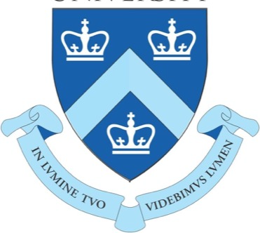

Ph.D. Student · Emory University
LLM Agents · Alignment · AI Safety
I am a Ph.D. student in Computer Science at Emory University working on LLM agents — and on what it takes to make their behavior reliable. My current work is retrieval for repository-scale coding agents: turning a codebase's structure into evidence an agent can actually use inside its own search loop. I am increasingly drawn to the alignment and safety side of the same question — as agents take more consequential actions, how do we specify what we want, and verify that is what they do?
I also work with Prof. Nasim Katebi and Prof. Gari Clifford on generative modeling of fetal and maternal biosignals, where the same question becomes a clinical one: how much of a Doppler waveform is recoverable from an ECG, and what does the residual tell us about fetal circulation?
Before the Ph.D. I spent 2+ years as a machine learning engineer, shipping production LLM, retrieval, and forecasting systems in industry. I hold an M.S. in Data Science from Columbia University and a B.A. in Computer Science & Economics from Emory.
Always happy to talk about LLM agents, alignment, or AI safety — reach out any time.
How agents plan, retrieve, and act in real environments — repositories, tools, long-horizon tasks — and what has to hold for that behavior to stay reliable at scale.
Closing the gap between what we specify and what a model actually optimizes: preference learning, reward design, and steering behavior without breaking capability.
Finding and mitigating the failure modes of capable systems — unsafe tool use, misgeneralization, deceptive or unintended behavior — before they reach deployment.
